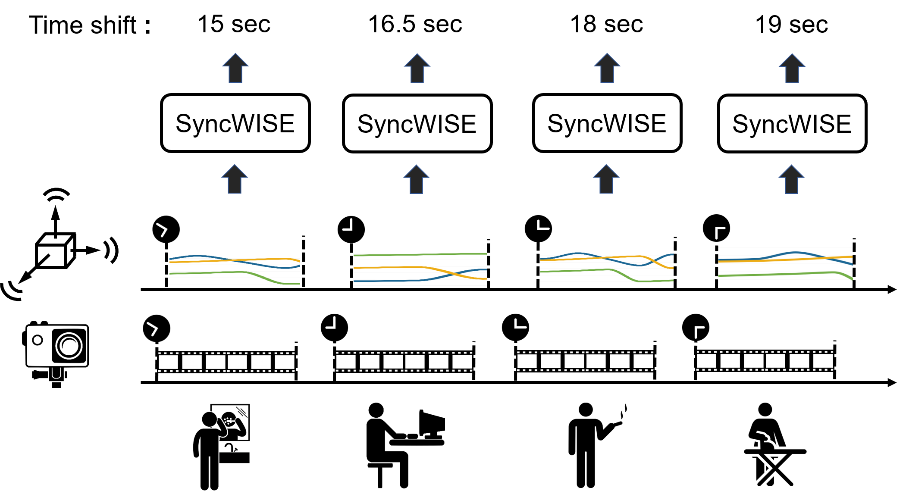
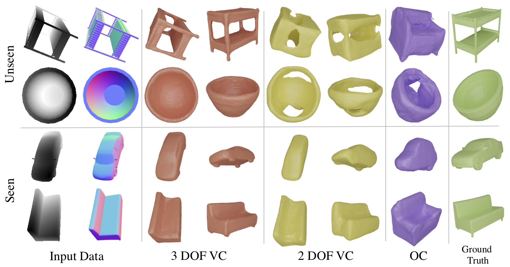
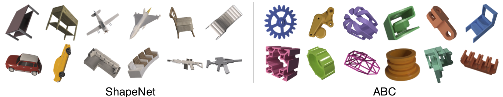
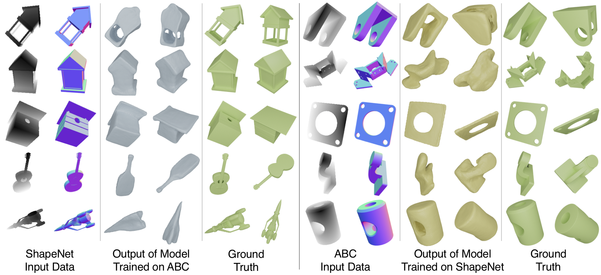

Our work provides a flexible, general purpose solution for synchronizing wearable cameras with other mobile sensors that can be applied to in-the-wild data, does not impose any additional burden on participants, and is fully-automated
Abstract
The development and validation of computational models to detect daily human behaviors (e.g., eating, smoking, brushing) using wearable devices requires labeled data collected from the natural field environment, with tight time synchronization of the micro-behaviors (e.g., start/end times of hand-to-mouth gestures during a smoking puff or an eating gesture) and the associated labels. Video data is increasingly being used for such label collection. Unfortunately, wearable devices and video cameras with independent (and drifting) clocks make tight time synchronization challenging. To address this issue, we present the Window Induced Shift Estimation method for Synchronization (SyncWISE) approach. We demonstrate the feasibility and effectiveness of our method by synchronizing the timestamps of a wearable camera and wearable accelerometer from 163 videos representing 45.2 hours of data from 21 participants enrolled in a real-world smoking cessation study. Our approach shows significant improvement over the state-of-the-art, even in the presence of high data loss, achieving 90% synchronization accuracy given a synchronization tolerance of 700 milliseconds. Our method also achieves state-of-the-art synchronization performance on the CMU-MMAC dataset.
Generalizing to Seen and Unseen Shapes
SDFNet is able to capture fine-grained details on the surface of seen classes (airplane example below) and infer occluded
surfaces of unseen categories (bathtub and camera). By explicitly estimating 2.5D sketches, SDFNet can capture concave surfaces (bathtub)
and protruding surfaces (camera lens).
Seen Class

Ground Truth
Unseen Class

Predicted
SDFNet reconstruction performance on classes seen during training and novel classes not seen during training
Viewer Centered Training Affects Generalization
When evaluated on 3 Degree-of-Freedom Viewer Centered (3 DOF VC)—object pose varies along azimuth, elevation and tilt,
our empirical findings show marginal decrease in performance between seen and unseen classes for the 3 DOF VC model.
This is new evidence that it is possible to learn a general shape representation with correct depth estimation and 3 DOF VC training.

Quantitative evaluation of 3 DOF VC shows high performance on both seen and unseen categories. Model is trained on ground truth depth and normal images.
Generalization Across Different Datasets

Sample images of our renders of the four most common ShapeNet categories and of objects from ABC. It is evident that the two datasets have different shape properties.
To further test the generalization ability of SDFNet, we train it one one shape dataset and test it on a significantly different shape dataset. Our findings show that when trained on ABC and tested on the 42 unseen categories of ShapeNet, 3 DOF VC SDFNet obtains comparable performance to SDFNet trained on the 13 ShapeNet categories. SDFNet trained on ShapeNet performs relatively worse when tested on ABC.

Qualitative comparison of models trained on ABC and tested on ShapeNet and vice-versa. Note the good reconstruction quality on the occluded part of the object.
Citation
Bibliography information of this work:
Yun C. Zhang, Shibo Zhang, Miao Liu, Elyse Daly, Samuel Battalio, Santosh Kumar, Bonnie Spring, James M. Rehg, and Nabil Alshurafa. 2020. SyncWISE: Window Induced Shift Estimation for Synchronization of Video and Accelerometry from Wearable Sensors. Proc. ACM Interact. Mob. Wearable Ubiquitous Technol. 4, 3, Article 107 (September 2020), 26 pages. https://doi.org/10.1145/3411824
@inproceedings{liu2019paying,
title={Attention distillation for learning video representations},
author={Liu, Miao and Chen, Xin and Zhang, Yun and Li, Yin and Rehg, James M},
booktitle={BMVC},
year={2020}
}
@article{zhang2020syncwise,
author = {Zhang, Yun C. and Zhang, Shibo and Liu, Miao and Daly, Elyse and Battalio, Samuel and Kumar, Santosh and Spring, Bonnie and Rehg, James M. and Alshurafa, Nabil},
title = {SyncWISE: Window Induced Shift Estimation for Synchronization of Video and Accelerometry from Wearable Sensors},
year = {2020},
issue_date = {September 2020},
publisher = {Association for Computing Machinery},
address = {New York, NY, USA},
volume = {4},
number = {3},
url = {https://doi.org/10.1145/3411824},
doi = {10.1145/3411824},
journal = {Proc. ACM Interact. Mob. Wearable Ubiquitous Technol.},
month = sep,
articleno = {107},
numpages = {26},
keywords = {Video, Wearable Sensor, Wearable Camera, Automatic Synchronization, Temporal Drift, Accelerometry, Time Synchronization}
}
Contact
For questions about paper, please contact yzhang467 at gatech dot edu